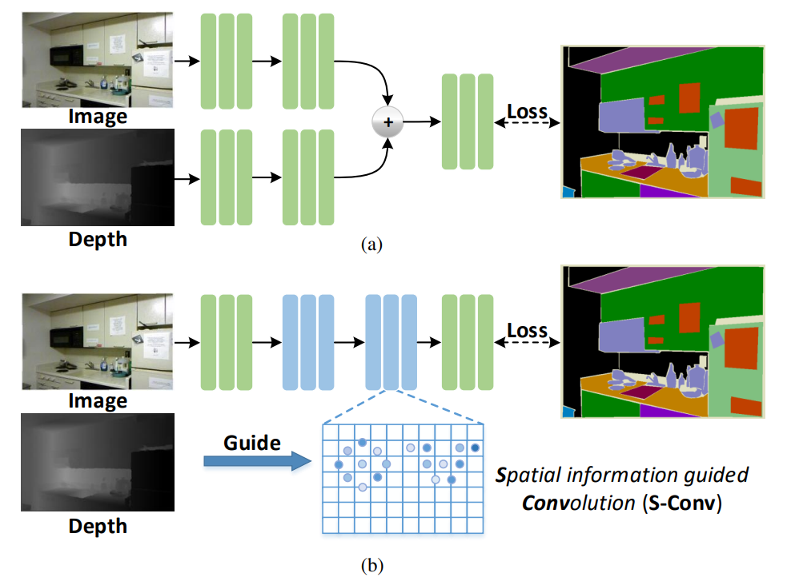

About
Lin-Zhuo Chen (陈林卓) was a master student at Nankai University, supervised by Prof. Ming-Ming Cheng. His research interests include Neural Rendering, RGBD Semantic segmentation and 3D reconstruction/generation.
If you are interested in my research, feel free to contact me.
Contact
 Email: linzhuochen@foxmail.com
Email: linzhuochen@foxmail.com
Nintendo Friend id: SW-5377-6414-8504
Selected Publications/Project
* denotes joint first authors.|  |
Spatial Information Guided Convolution for Real-Time RGBD Semantic Segmentation
IEEE TIP, 2021. (SCI-1, CCF-A)
|
 |
Interactive Image Segmentation with First Click Attention
IEEE CVPR, 2020. (CCF-A)
|
 |
四轴飞行器自主飞行与表演
|
 |
自动增益控制宽带放大器
|
Reviwers
- Review for IEEE Transactions on Neural Networks and Learning Systems (TNNLS)
- Review for IEEE Transactions on Image Processing (TIP)
- Review for IEEE Journal of Selected Topics in Signal Processing (J-STSP)
Last update: 2022-09-01.